写作即编程
黄增光（@chloerei） <chloerei@gmail.com>
关于我
Web 开发者
写作与我相关吗？
沟通
如果你人为地将问题搞得难以阅读，它多半会被忽略，人们更愿读易懂的问题。
How To Ask Questions The Smart Way
— Eric S. Raymond
— Eric S. Raymond
分享
杰出的程序员跟勉强过得去的程序员之间的差别，不在于它们掌握了多少种编程语言……真正的关键是，他们能不能把他们的想法表达清楚。
— Joel Spolsky
产品文档
发布（HTML/PDF）
多人协作
版本管理
Markdown
支持 Markdown 的网站
Stack Overflow
GitHub
Ruby China
…
example.md
# A First Level Header
## A Second Level Header
Now is the time for all good men to come to
the aid of their country. This is just a
regular paragraph.
The quick brown fox jumped over the lazy
dog's back.
### Header 3
> This is a blockquote.
>
> This is the second paragraph in the blockquote.
>
> ## This is an H2 in a blockquote$ gem install redcarpet
$ redcarpet example.md > example.htmlexample.html
<h1>First Level Header</h1>
<h2>A Second Level Header</h2>
<p>Now is the time for all good men to come to
the aid of their country. This is just a
regular paragraph.</p>
<p>The quick brown fox jumped over the lazy
dog's back.</p>
<h3>Header 3</h3>
<blockquote>
<p>This is a blockquote.</p>
<p>This is the second paragraph in the blockquote.</p>
<h2>This is an H2 in a blockquote</h2>
</blockquote>require 'redcarpet'
# Initializes a Markdown parser
markdown = Redcarpet::Markdown.new(renderer, extensions = {})
markdown.render("This is *bongos*, indeed.")
# => "<p>This is <em>bongos</em>, indeed.</p>"Atom
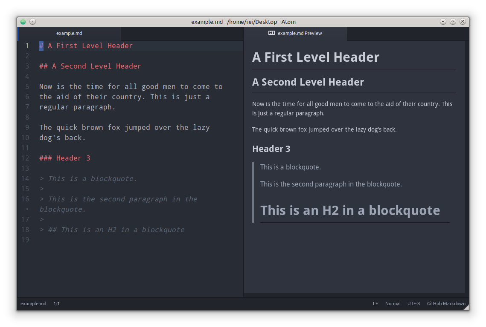
Markdown 语法
标题
# 一级标题
## 二级标题
### 三级标题<h1>一级标题</h1>
<h2>二级标题</h2>
<h3>三级标题</h3>精通 H5
##### 应用
##### 游戏
##### 页面<h5>应用</h5>
<h5>游戏</h5>
<h5>页面</h5>Tip | 标题不等于大号加粗 |
Tip | 空格空行都是有意义的 |
段落
在我的后园，可以看见墙外有两株树，一株是枣树，还有一株也是枣树。
这上面的夜的天空，奇怪而高，我生平没有见过这样奇怪而高的天空。<p>在我的后园，可以看见墙外有两株树，一株是枣树，还有一株也是枣树。</p>
<p>这上面的夜的天空，奇怪而高，我生平没有见过这样奇怪而高的天空。</p>Tip | 换行（\n）不是换行（<br>）。 |
这是第一行
这是第二行<p>这是第一行
这是第二行</p>这是第一行 这是第二行
换行方法一：行末加两个空格。
这是第一行
这是第二行<p>这是第一行<br>
这是第二行</p>换行方法二：修改渲染器。
$ redcarpet --render-hard_wrap breakline.md<p>这是第一行<br>
这是第二行</p>引用
> 在我的后园，可以看见墙外有两株树，一株是枣树，还有一株也是枣树。
> 这上面的夜的天空，奇怪而高，我生平没有见过这样奇怪而高的天空。<blockquote>
<p>在我的后园，可以看见墙外有两株树，一株是枣树，还有一株也是枣树。</p>
<p>这上面的夜的天空，奇怪而高，我生平没有见过这样奇怪而高的天空。</p>
</blockquote>代码块
def foo
puts "hello world"
end<pre>
<code>
def foo
puts "hello world"
end
</code>
</pre>GitHub Flavored Markdown (GFM)
```ruby
def foo
puts "hello world"
end
```有序列表
1. 有序列表
2. 有序列表
3. 有序列表<ol>
<li>有序列表</li>
<li>有序列表</li>
<li>有序列表</li>
</ol>无序列表
* 无序列表
* 无序列表
* 无序列表<ul>
<li>无序列表</li>
<li>无序列表</li>
<li>无序列表</li>
</ul>文字样式
*斜体*
**加粗**
`代码`<em>斜体</em>
<strong>加粗</strong>
<code>代码</code>链接/图片
[链接](http://example.org/)
<a href="http://example.org/">链接</a>
<img src="http://example.org/image.png" alt="图片">Markdown 的应用场景
Jekyll
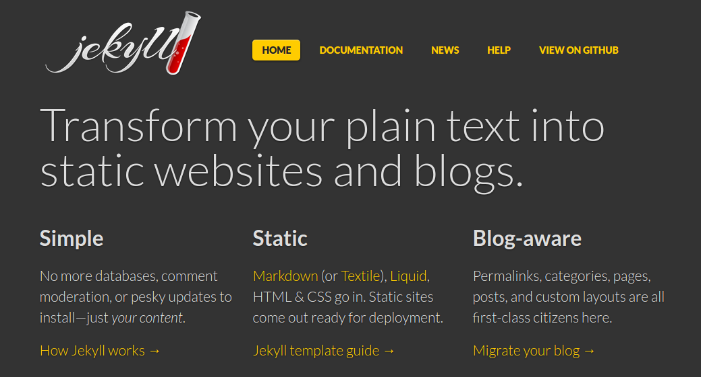
Middleman
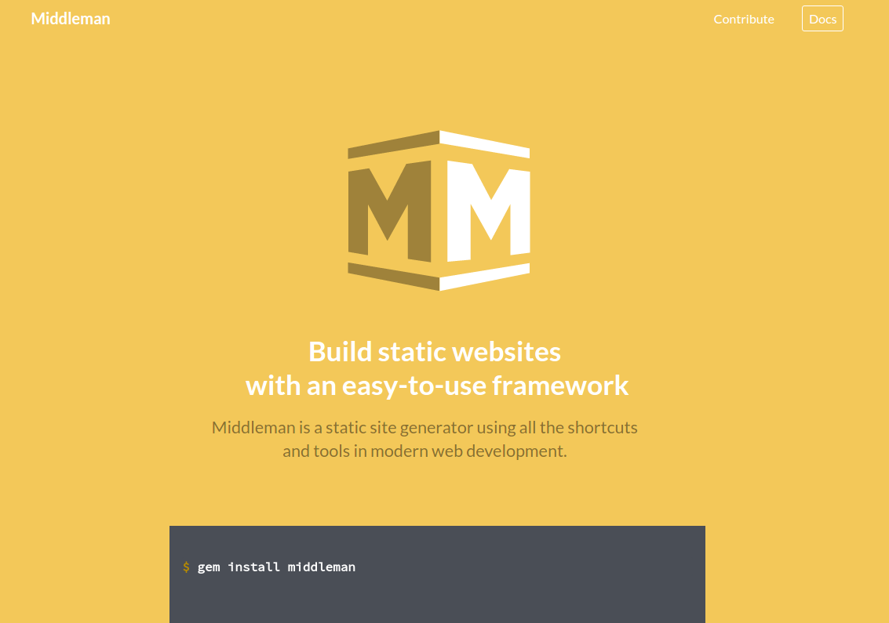
GitBook

Markdown 的局限
功能少
缺少表格、脚注、目录、拆分文件……
太多方言
GitHub Flavor、Stack Overflow Flavor……
不一致
# Hello there
This is a paragraph.
- one
- two
- three
- four
1. pirate
2. ninja
3. zombie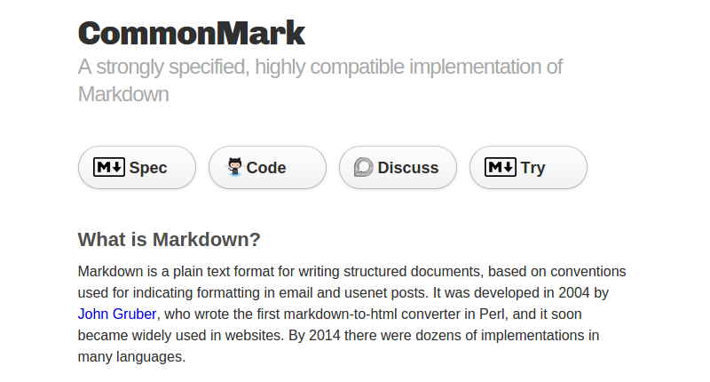
又一个方言
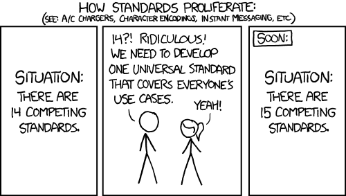
我们需要更好的标记语言。
简单和强大冲突吗？
AsciiDoc
AsciiDoc 发布于 2002-11-25。
Markdown 发布于 2004-3-19。
AsciiDoc → DocBook
example.adoc
= Hello, AsciiDoc!
Doc Writer <doc@example.com>
An introduction to http://asciidoc.org[AsciiDoc].
== First Section
* item 1
* item 2
[source,ruby]
----
puts "Hello, World!"
----Asciidoctor
$ gem install asciidoctor
$ asciidoctor example.adoc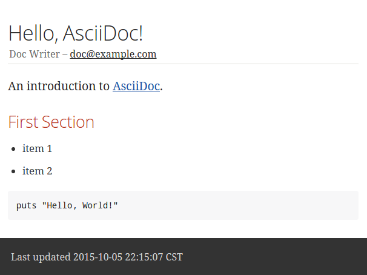
require 'asciidoctor'
content = '_Zen_ in the art of writing http://asciidoctor.org[AsciiDoc].'
Asciidoctor.convert content
# => "<div class=\"paragraph\">\n<p><em>Zen</em> in the art of writing <a href=\"http://asciidoctor.org\">AsciiDoc</a>.</p>\n</div>"Atom
$ apm install language-asciidoc asciidoc-preview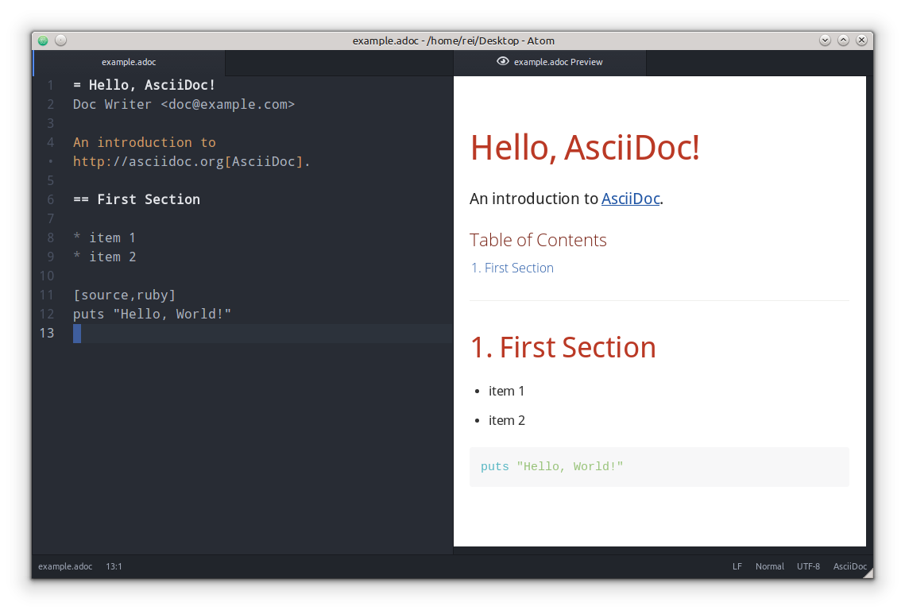
jekyll-asciidoc
middleman-asciidoc
GitBook v2+
Asciidoc 语法
文档标题和属性
= 文档标题
作者 <author@example.org>
:appversion: 1.0.0章节标题
= 文档标题
== 一级标题
=== 二级标题
==== 三级标题= 文档标题
:toc:
== 第一章
=== 第一节
=== 第二节
== 第二章
== 第三章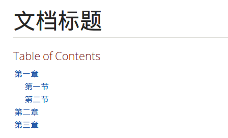
段落
在我的后园，可以看见墙外有两株树，一株是枣树，还有一株也是枣树。
这上面的夜的天空，奇怪而高，我生平没有见过这样奇怪而高的天空。换行方法一：行末加 ` +`
第一行 +
第二行换行方法二：段落属性
[%hardbreaks]
第一行
第二行换行方法三：全局属性
= 文档标题
:hardbreaks:
第一行
第二行引用
____
在我的后园，可以看见墙外有两株树，一株是枣树，还有一株也是枣树。
____
[quote, 鲁迅]
____
在我的后园，可以看见墙外有两株树，一株是枣树，还有一株也是枣树。
____
[quote, 鲁迅, 《秋夜》]
____
在我的后园，可以看见墙外有两株树，一株是枣树，还有一株也是枣树。
____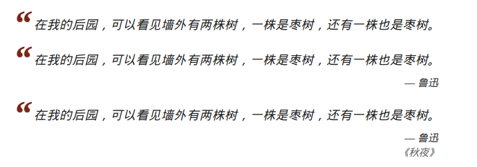
图片
image::path/to/image.png[]
image::https://ruby-china.org/logo.png[].Ruby China Logo
image::images/ruby-china.png[width=300]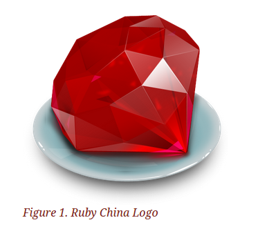
音频/视频
audio::path/to/audio.ogg[]
video::path/to/video.ogg[]表格
.Table Title
|===
|Name of Column 1 |Name of Column 2 |Name of Column 3
|Cell in column 1, row 1
|Cell in column 2, row 1
|Cell in column 3, row 1
|Cell in column 1, row 2
|Cell in column 2, row 2
|Cell in column 3, row 2
|===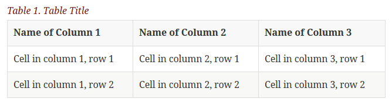
[format="csv", options="header"]
|===
Artist,Track,Genre
Baauer,Harlem Shake,Hip Hop
The Lumineers,Ho Hey,Folk Rock
|===[format="csv", options="header"]
|===
include::customers.csv[]
|===代码块
[source,ruby]
----
require 'sinatra'
get '/hi' do
"Hello World!"
end
----标注
:source-highlighter: coderay
:icons: font
.hello_world.rb
[source,ruby]
----
require 'sinatra' # <1>
get '/hi' do # <2>
"Hello World!" # <3>
end
----
<1> Library import
<2> URL mapping
<3> Content for response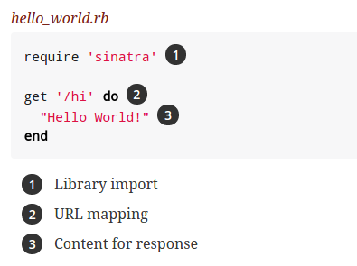
脚注
* 原汁海螺 28 元
* 原汁扇贝 10 元
* 海捕大虾 38 元 footnote:[以上海鲜按个计价]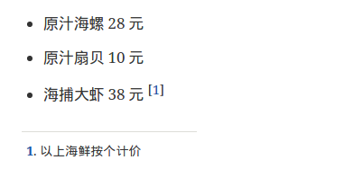
警告
:fonts: icon
TIP: Pro tip...
IMPORTANT: Don't forget...
WARNING: Watch out for...
CAUTION: Ensure that...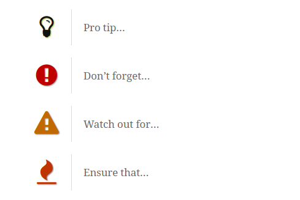
Include
index.adoc
= Document Title
include::sections/chapter_1.adoc[]
include::sections/chapter_2.adoc[]
include::sections/chapter_3.adoc[].
|-- index.adoc
`-- sections
|-- chapter_1.adoc
|-- chapter_2.adoc
`-- chapter_3.adocBlock
.Title
[Blockname, Attributes]
--
Content
--自定义 Block
[shout]
--
The time is now. Get a move on.
--require 'asciidoctor'
require 'asciidoctor/extensions'
class ShoutBlock < Asciidoctor::Extensions::BlockProcessor
PeriodRx = /\.(?= |$)/
use_dsl
named :shout
on_context :paragraph
name_positional_attributes 'vol'
parse_content_as :simple
def process parent, reader, attrs
volume = ((attrs.delete 'vol') || 1).to_i
create_paragraph parent, (reader.lines.map {|l| l.upcase.gsub PeriodRx, '!' * volume }), attrs
end
endAsciidoctor::Extensions.register do
block ShoutBlock
end
Asciidoctor.convert_file 'sample-with-shout-block.adoc'更多……
Asciidoctor
跨平台
Asciidoctor
AsciidoctorJ (via JRuby)
Asciidoctor.js (via Opal)
1 → N
HTML
PDF
EPUB
Reveal.js
LaTex
Diagram
Asciidoctor (HTML)
$ asciidoctor index.adocThemes
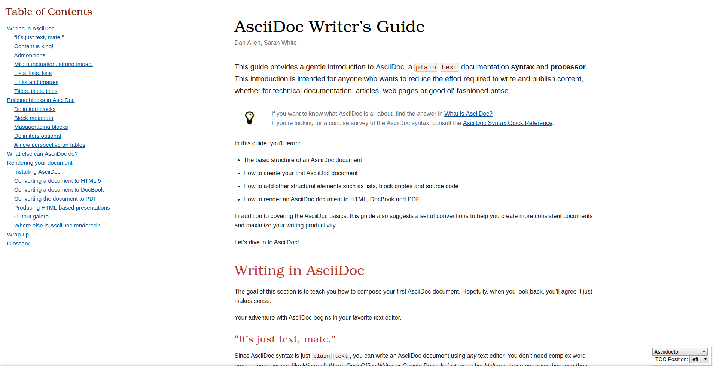
asciidoctor-pdf
$ gem install --pre asciidoctor-pdf
$ asciidoctor-pdf index.adoc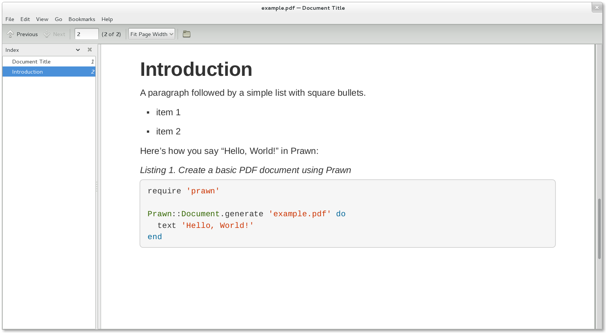
CJK 补丁和字体
$ gem install asciidoctor-pdf-cjk-kai_gen_gothic
$ asciidoctor-pdf-cjk-kai_gen_gothic-install
$ asciidoctor-pdf -r asciidoctor-pdf-cjk-kai_gen_gothic \
-a pdf-style=THEME \
index.adocprogit2 中文版
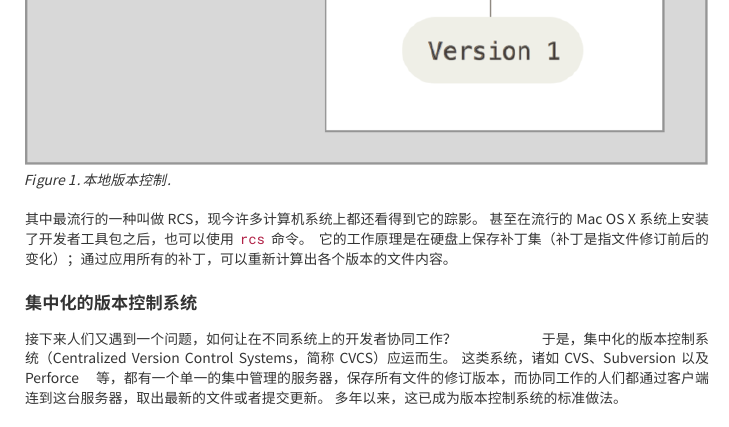
Asciidoctor-epub3
$ gem install --pre asciidoctor-epub3
$ asciidoctor-epub3 index.adoc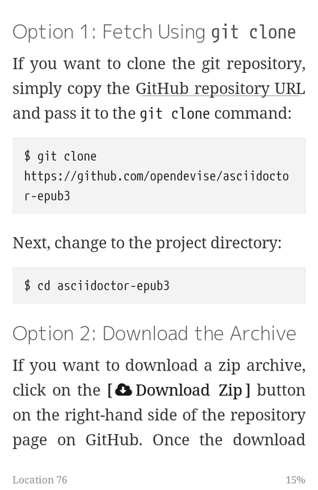
MOBI
$ gem install kindlegen
$ asciidoctor-epub3 -a ebook-format=kf8 index.adocAsciidoctor Book Template
$ git clone https://github.com/chloerei/asciidoctor-book-template.git bookname
$ cd bookname
$ bundle install
$ asciidoctor-pdf-cjk-kai_gen_gothic-install
$ rake buildAsciidoctor-reveal.js
$ gem install asciidoctor tilt thread_safe
$ gem install slim --version 2.1.0
$ git clone git://github.com/asciidoctor/asciidoctor-reveal.js.git
$ asciidoctor -T templates/slim index.adoc= Title Slide
== Slide One
* Foo
* Bar
* World
== Slide Two
Hello World - Good Bye Cruel WorldAsciidoctor-latex
$ gem install --pre asciidoctor-latex
# 解析文档中的 latex
$ asciidoctor-latex -b html foo.adoc
# 生成 latex 文档
$ asciidoctor-latex foo.adoc\[
e^{2\pi \sqrt{-1}} = 1
\]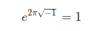
Asciidoctor-diagram
$ gem install --pre asciidoctor-diagram[ditaa]
....
+-------------+
| Asciidoctor |-------+
| diagram | |
+-------------+ | PNG out
^ |
| ditaa in |
| v
+--------+ +--------+----+ /---------------\
| | --+ Asciidoctor +--> | |
| Text | +-------------+ | Beautiful |
|Document| | !magic! | | Output |
| {d}| | | | |
+---+----+ +-------------+ \---------------/
: ^
| Lots of work |
+-----------------------------------+
....$ asciidoctor -r asciidoctor-diagram index.adoc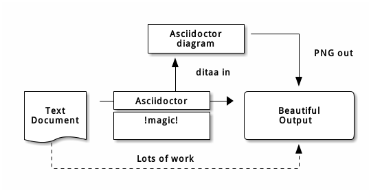
总结
Markdown
AsciiDoc
Jekyll
Middleman
GitBook
Asciidoctor
快乐写作，快乐编程。
谢谢。
by 黄增光（@chloerei） chloerei@gmail.com